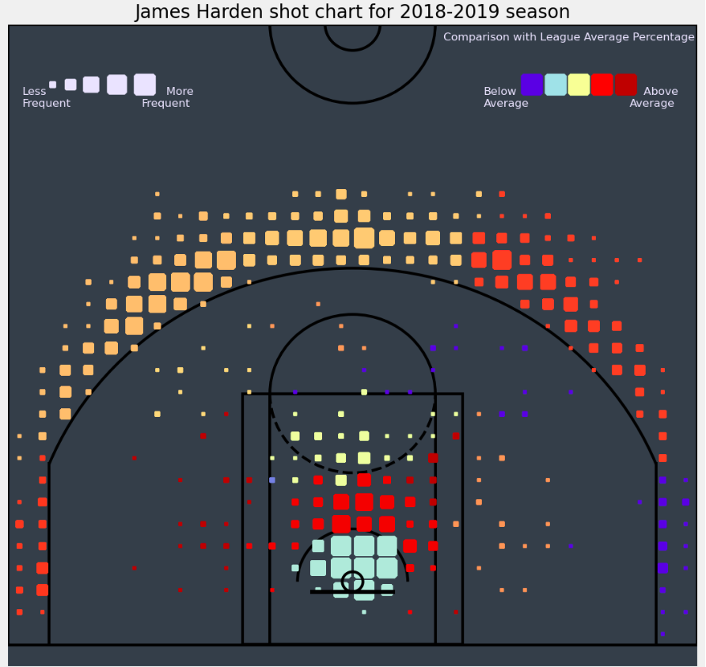
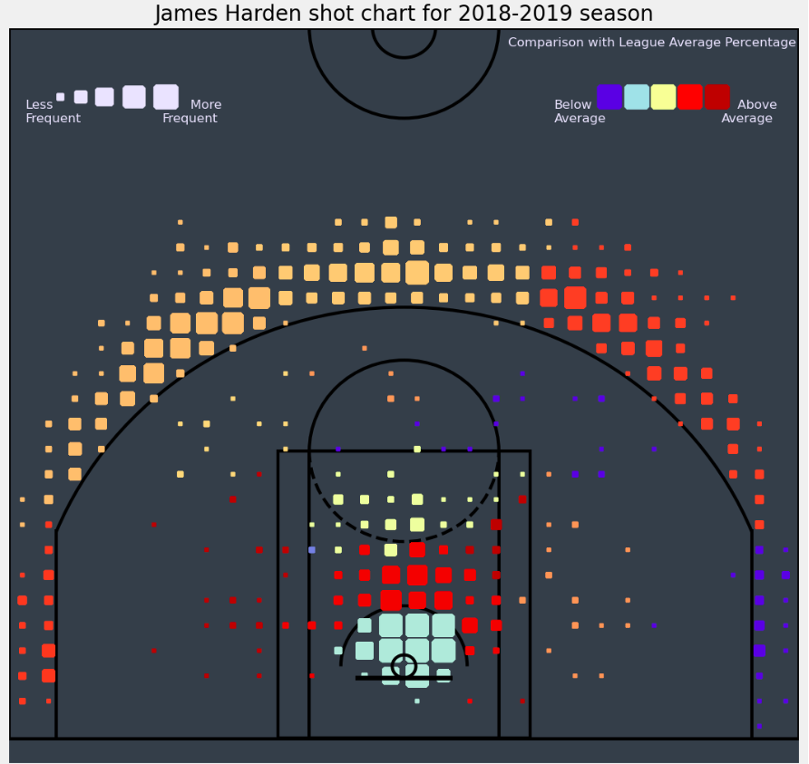
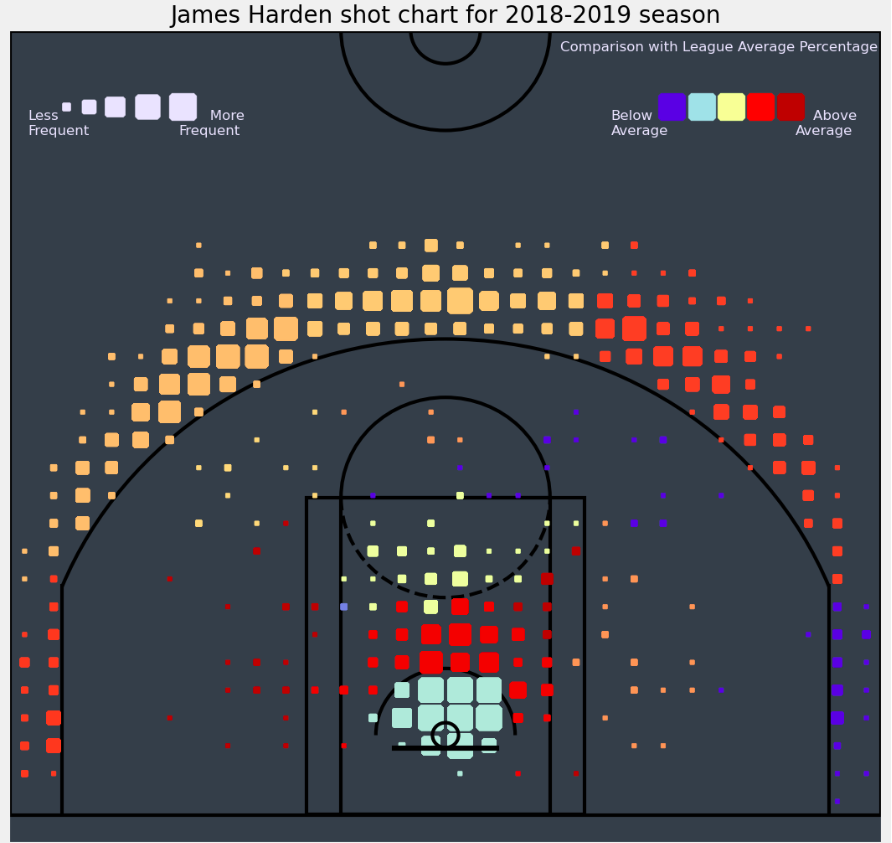

As a Data Scientist I have plenty of professional and personal experience i Exploratory Data Analysis envolving libraries such as Pandas, Xarray, Numpy, Matplotlib, Seaborn ... to dissect, clean, visualize and derive insights from complex datasets.
Through EDA, I've honed my ability to identify patterns, anomalies, and trends, enabling data-driven decision-making and fostering a deeper understanding of the underlying data structures.
As a huge NBA fan and a big basketball mind I have perform several personal analysis on basketball data. As sports evolve I believe that Data Science its crutial for teams to better understand player performance, strategic insights and game dynamics through comprehensive analysis of player statistics, game trends and predictive modeling. It empowers teams to gain a competitive edge in a rapidly evolving sport.
You can check part of my personal experience in Exploratory Data Analysis for Basketball data from this GitHub repository:Basketball EDA Repository.
